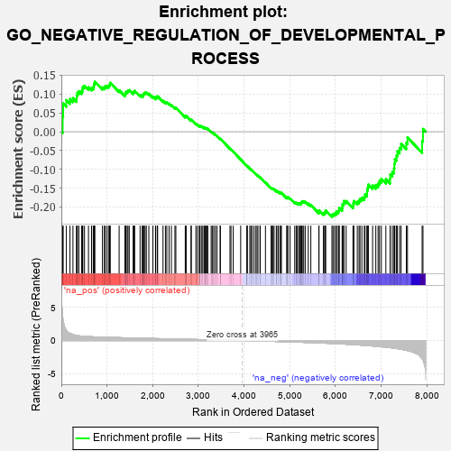
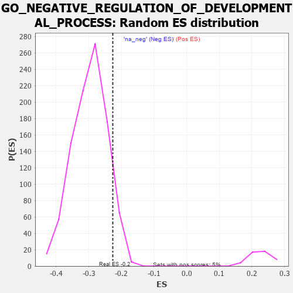

| | | Dataset | 7d |
| Phenotype | NoPhenotypeAvailable |
| Upregulated in class | na_neg |
| GeneSet | GO_NEGATIVE_REGULATION_OF_DEVELOPMENTAL_PROCESS |
| Enrichment Score (ES) | -0.22658013 |
| Normalized Enrichment Score (NES) | -0.76150894 |
| Nominal p-value | 0.9192025 |
| FDR q-value | 1.0 |
| FWER p-Value | 1.0 |
Table: GSEA Results Summary

Fig 1: Enrichment plot: GO_NEGATIVE_REGULATION_OF_DEVELOPMENTAL_PROCESS
Profile of the Running ES Score & Positions of GeneSet Members on the Rank Ordered List
| PROBE | GENE SYMBOL | GENE_TITLE | RANK IN GENE LIST | RANK METRIC SCORE | RUNNING ES | CORE ENRICHMENT | | 1 | ABCA5 | | | 29 | 3.799 | 0.0402 | No |
| 2 | SIX2 | | | 40 | 3.152 | 0.0753 | No |
| 3 | DISP3 | | | 110 | 1.525 | 0.0841 | No |
| 4 | RORB | | | 189 | 1.097 | 0.0868 | No |
| 5 | LBX1 | | | 254 | 0.929 | 0.0893 | No |
| 6 | WEE2 | | | 333 | 0.766 | 0.0881 | No |
| 7 | DLL1 | | | 337 | 0.760 | 0.0965 | No |
| 8 | GSK3A | | | 351 | 0.745 | 0.1035 | No |
| 9 | AXIN2 | | | 383 | 0.713 | 0.1077 | No |
| 10 | SUFU | | | 443 | 0.665 | 0.1078 | No |
| 11 | LEO1 | | | 463 | 0.655 | 0.1130 | No |
| 12 | LRP1 | | | 470 | 0.648 | 0.1197 | No |
| 13 | THOC1 | | | 507 | 0.627 | 0.1223 | No |
| 14 | PITX3 | | | 594 | 0.596 | 0.1182 | No |
| 15 | HES5 | | | 661 | 0.571 | 0.1163 | No |
| 16 | FST | | | 698 | 0.560 | 0.1182 | No |
| 17 | VASH1 | | | 712 | 0.556 | 0.1229 | No |
| 18 | ID1 | | | 719 | 0.555 | 0.1286 | No |
| 19 | WDR61 | | | 734 | 0.549 | 0.1331 | No |
| 20 | HDAC5 | | | 900 | 0.506 | 0.1178 | No |
| 21 | PDCD4 | | | 941 | 0.497 | 0.1184 | No |
| 22 | CTR9 | | | 964 | 0.492 | 0.1212 | No |
| 23 | MEN1 | | | 1003 | 0.483 | 0.1220 | No |
| 24 | YAP1 | | | 1041 | 0.475 | 0.1227 | No |
| 25 | RBM15 | | | 1057 | 0.473 | 0.1262 | No |
| 26 | RAI1 | | | 1071 | 0.469 | 0.1300 | No |
| 27 | CDC73 | | | 1265 | 0.436 | 0.1103 | No |
| 28 | FKBP4 | | | 1390 | 0.412 | 0.0991 | No |
| 29 | NOCT | | | 1402 | 0.409 | 0.1024 | No |
| 30 | CARM1 | | | 1413 | 0.408 | 0.1058 | No |
| 31 | PTBP1 | | | 1441 | 0.402 | 0.1070 | No |
| 32 | VASN | | | 1459 | 0.398 | 0.1094 | No |
| 33 | IFRD1 | | | 1486 | 0.392 | 0.1106 | No |
| 34 | CNTN4 | | | 1571 | 0.379 | 0.1042 | No |
| 35 | PAF1 | | | 1588 | 0.376 | 0.1065 | No |
| 36 | RNF6 | | | 1605 | 0.373 | 0.1088 | No |
| 37 | MEIS1 | | | 1723 | 0.351 | 0.0978 | No |
| 38 | LRP5 | | | 1769 | 0.342 | 0.0960 | No |
| 39 | STRAP | | | 1793 | 0.339 | 0.0970 | No |
| 40 | THOC2 | | | 1796 | 0.338 | 0.1006 | No |
| 41 | ABR | | | 1812 | 0.335 | 0.1026 | No |
| 42 | RNF10 | | | 1833 | 0.331 | 0.1038 | No |
| 43 | SMAD4 | | | 1860 | 0.326 | 0.1043 | No |
| 44 | DDX6 | | | 1915 | 0.318 | 0.1010 | No |
| 45 | FOXO4 | | | 2004 | 0.304 | 0.0932 | No |
| 46 | LUC7L | | | 2060 | 0.297 | 0.0896 | No |
| 47 | MEIS2 | | | 2063 | 0.296 | 0.0928 | No |
| 48 | LSM1 | | | 2098 | 0.291 | 0.0918 | No |
| 49 | BMP7 | | | 2107 | 0.290 | 0.0941 | No |
| 50 | MYLIP | | | 2225 | 0.272 | 0.0822 | No |
| 51 | EAF2 | | | 2278 | 0.263 | 0.0786 | No |
| 52 | REST | | | 2308 | 0.259 | 0.0779 | No |
| 53 | MIF | | | 2357 | 0.252 | 0.0746 | No |
| 54 | OMA1 | | | 2408 | 0.244 | 0.0710 | No |
| 55 | ZC3H8 | | | 2486 | 0.229 | 0.0638 | No |
| 56 | HUWE1 | | | 2506 | 0.225 | 0.0640 | No |
| 57 | PHB2 | | | 2712 | 0.197 | 0.0399 | No |
| 58 | SLIT2 | | | 2724 | 0.195 | 0.0408 | No |
| 59 | RORA | | | 2730 | 0.193 | 0.0424 | No |
| 60 | PHF14 | | | 2838 | 0.178 | 0.0307 | No |
| 61 | NR2E1 | | | 2844 | 0.177 | 0.0321 | No |
| 62 | CDK13 | | | 2944 | 0.158 | 0.0212 | No |
| 63 | NELFB | | | 2979 | 0.153 | 0.0186 | No |
| 64 | WNT4 | | | 3023 | 0.146 | 0.0148 | No |
| 65 | BRCA2 | | | 3024 | 0.146 | 0.0165 | No |
| 66 | LEF1 | | | 3037 | 0.144 | 0.0166 | No |
| 67 | MAP2 | | | 3074 | 0.140 | 0.0136 | No |
| 68 | CUL4A | | | 3097 | 0.137 | 0.0124 | No |
| 69 | MTMR2 | | | 3126 | 0.133 | 0.0103 | No |
| 70 | TLX3 | | | 3140 | 0.131 | 0.0102 | No |
| 71 | SFRP5 | | | 3154 | 0.129 | 0.0100 | No |
| 72 | PAX6 | | | 3170 | 0.127 | 0.0095 | No |
| 73 | TRIO | | | 3192 | 0.123 | 0.0083 | No |
| 74 | FZR1 | | | 3205 | 0.122 | 0.0081 | No |
| 75 | CTDP1 | | | 3279 | 0.109 | 0.0000 | No |
| 76 | SMAD3 | | | 3303 | 0.105 | -0.0017 | No |
| 77 | RFX4 | | | 3334 | 0.099 | -0.0044 | No |
| 78 | SMAD7 | | | 3369 | 0.093 | -0.0077 | No |
| 79 | MED1 | | | 3405 | 0.089 | -0.0112 | No |
| 80 | HGS | | | 3476 | 0.080 | -0.0192 | No |
| 81 | CDK5 | | | 3480 | 0.080 | -0.0187 | No |
| 82 | EPN2 | | | 3691 | 0.045 | -0.0451 | No |
| 83 | NF1 | | | 3713 | 0.040 | -0.0473 | No |
| 84 | SKI | | | 3762 | 0.032 | -0.0531 | No |
| 85 | NRG3 | | | 3925 | 0.005 | -0.0738 | No |
| 86 | TAL1 | | | 4064 | -0.018 | -0.0913 | No |
| 87 | SFRP2 | | | 4065 | -0.018 | -0.0911 | No |
| 88 | ROBO2 | | | 4066 | -0.018 | -0.0909 | No |
| 89 | ABL1 | | | 4125 | -0.027 | -0.0981 | No |
| 90 | CDK12 | | | 4148 | -0.033 | -0.1005 | No |
| 91 | GFI1 | | | 4168 | -0.037 | -0.1025 | No |
| 92 | TIMP1 | | | 4209 | -0.043 | -0.1072 | No |
| 93 | GAK | | | 4249 | -0.050 | -0.1116 | No |
| 94 | WNT11 | | | 4282 | -0.056 | -0.1150 | No |
| 95 | TBX2 | | | 4303 | -0.060 | -0.1169 | No |
| 96 | FIG4 | | | 4348 | -0.068 | -0.1218 | No |
| 97 | ADRB2 | | | 4352 | -0.068 | -0.1214 | No |
| 98 | LRRK2 | | | 4467 | -0.087 | -0.1350 | No |
| 99 | SYT4 | | | 4590 | -0.116 | -0.1493 | No |
| 100 | GATA3 | | | 4614 | -0.120 | -0.1509 | No |
| 101 | LMX1A | | | 4631 | -0.124 | -0.1515 | No |
| 102 | FGFR3 | | | 4656 | -0.129 | -0.1531 | No |
| 103 | ARF6 | | | 4704 | -0.140 | -0.1575 | No |
| 104 | LHX2 | | | 4716 | -0.143 | -0.1572 | No |
| 105 | FBLN1 | | | 4748 | -0.149 | -0.1595 | No |
| 106 | RTN4 | | | 4783 | -0.154 | -0.1621 | No |
| 107 | TERT | | | 4801 | -0.157 | -0.1624 | No |
| 108 | FBXW7 | | | 4816 | -0.161 | -0.1624 | No |
| 109 | SUZ12 | | | 4931 | -0.185 | -0.1749 | No |
| 110 | ADCK1 | | | 4953 | -0.188 | -0.1754 | No |
| 111 | PRKDC | | | 4955 | -0.189 | -0.1733 | No |
| 112 | KLF4 | | | 5005 | -0.198 | -0.1773 | No |
| 113 | MMP9 | | | 5108 | -0.227 | -0.1878 | No |
| 114 | FLCN | | | 5140 | -0.235 | -0.1890 | No |
| 115 | TBX1 | | | 5166 | -0.241 | -0.1895 | No |
| 116 | SMO | | | 5195 | -0.247 | -0.1902 | No |
| 117 | GPR4 | | | 5219 | -0.250 | -0.1903 | No |
| 118 | KRIT1 | | | 5248 | -0.257 | -0.1909 | No |
| 119 | FOXJ2 | | | 5249 | -0.257 | -0.1879 | No |
| 120 | PTEN | | | 5262 | -0.261 | -0.1864 | No |
| 121 | EPHA4 | | | 5273 | -0.265 | -0.1847 | No |
| 122 | EPN1 | | | 5304 | -0.272 | -0.1854 | No |
| 123 | TOB2 | | | 5337 | -0.282 | -0.1862 | No |
| 124 | SOX8 | | | 5404 | -0.296 | -0.1913 | No |
| 125 | LRIG2 | | | 5460 | -0.310 | -0.1948 | No |
| 126 | ASPM | | | 5637 | -0.358 | -0.2132 | No |
| 127 | G6PD | | | 5638 | -0.358 | -0.2091 | No |
| 128 | SLIT1 | | | 5735 | -0.387 | -0.2169 | No |
| 129 | TLR2 | | | 5761 | -0.395 | -0.2156 | No |
| 130 | ABCG1 | | | 5778 | -0.399 | -0.2130 | No |
| 131 | TRPC6 | | | 5784 | -0.401 | -0.2090 | No |
| 132 | STK11 | | | 5922 | -0.443 | -0.2215 | Yes |
| 133 | LDB1 | | | 5944 | -0.451 | -0.2190 | Yes |
| 134 | GABPA | | | 5977 | -0.464 | -0.2177 | Yes |
| 135 | XBP1 | | | 6011 | -0.475 | -0.2164 | Yes |
| 136 | TLL2 | | | 6020 | -0.478 | -0.2119 | Yes |
| 137 | JAG1 | | | 6060 | -0.494 | -0.2112 | Yes |
| 138 | CALR | | | 6077 | -0.499 | -0.2075 | Yes |
| 139 | FBN1 | | | 6080 | -0.499 | -0.2020 | Yes |
| 140 | STK4 | | | 6145 | -0.518 | -0.2042 | Yes |
| 141 | FEZF2 | | | 6150 | -0.519 | -0.1988 | Yes |
| 142 | ROCK1 | | | 6152 | -0.520 | -0.1929 | Yes |
| 143 | THRB | | | 6178 | -0.531 | -0.1900 | Yes |
| 144 | KLF2 | | | 6182 | -0.532 | -0.1842 | Yes |
| 145 | RGN | | | 6233 | -0.547 | -0.1843 | Yes |
| 146 | BBS2 | | | 6383 | -0.608 | -0.1964 | Yes |
| 147 | TRPM4 | | | 6390 | -0.612 | -0.1901 | Yes |
| 148 | CDKL3 | | | 6401 | -0.618 | -0.1842 | Yes |
| 149 | SOX2 | | | 6477 | -0.652 | -0.1863 | Yes |
| 150 | TRPV4 | | | 6515 | -0.668 | -0.1833 | Yes |
| 151 | KANK1 | | | 6536 | -0.678 | -0.1781 | Yes |
| 152 | ROBO1 | | | 6577 | -0.699 | -0.1751 | Yes |
| 153 | WWTR1 | | | 6631 | -0.729 | -0.1735 | Yes |
| 154 | PTPRS | | | 6646 | -0.738 | -0.1668 | Yes |
| 155 | CERS2 | | | 6689 | -0.756 | -0.1634 | Yes |
| 156 | PAK1 | | | 6691 | -0.757 | -0.1548 | Yes |
| 157 | EGFR | | | 6708 | -0.765 | -0.1480 | Yes |
| 158 | GSK3B | | | 6719 | -0.768 | -0.1404 | Yes |
| 159 | PAQR3 | | | 6812 | -0.819 | -0.1428 | Yes |
| 160 | IQCB1 | | | 6882 | -0.856 | -0.1417 | Yes |
| 161 | MIB1 | | | 6932 | -0.890 | -0.1377 | Yes |
| 162 | DNM1L | | | 6963 | -0.913 | -0.1310 | Yes |
| 163 | CCR2 | | | 7003 | -0.939 | -0.1252 | Yes |
| 164 | RYK | | | 7102 | -1.000 | -0.1262 | Yes |
| 165 | TSPO | | | 7194 | -1.065 | -0.1256 | Yes |
| 166 | OVOL2 | | | 7197 | -1.068 | -0.1135 | Yes |
| 167 | ABCA1 | | | 7243 | -1.113 | -0.1064 | Yes |
| 168 | CIB1 | | | 7280 | -1.152 | -0.0977 | Yes |
| 169 | PARP3 | | | 7289 | -1.158 | -0.0853 | Yes |
| 170 | MSX2 | | | 7299 | -1.171 | -0.0730 | Yes |
| 171 | NGEF | | | 7335 | -1.209 | -0.0635 | Yes |
| 172 | PLAC8 | | | 7355 | -1.223 | -0.0518 | Yes |
| 173 | LOXL2 | | | 7403 | -1.269 | -0.0432 | Yes |
| 174 | SPDEF | | | 7436 | -1.313 | -0.0321 | Yes |
| 175 | DCC | | | 7550 | -1.470 | -0.0296 | Yes |
| 176 | TTPA | | | 7575 | -1.516 | -0.0152 | Yes |
| 177 | CAV3 | | | 7896 | -2.739 | -0.0246 | Yes |
| 178 | PI16 | | | 7914 | -2.948 | 0.0073 | Yes |
Table: GSEA details [plain text format]

Fig 2: GO_NEGATIVE_REGULATION_OF_DEVELOPMENTAL_PROCESS: Random ES distribution
Gene set null distribution of ES for GO_NEGATIVE_REGULATION_OF_DEVELOPMENTAL_PROCESS